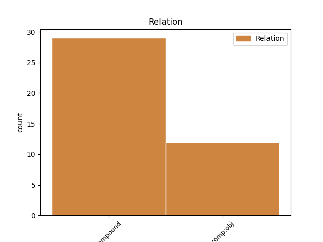
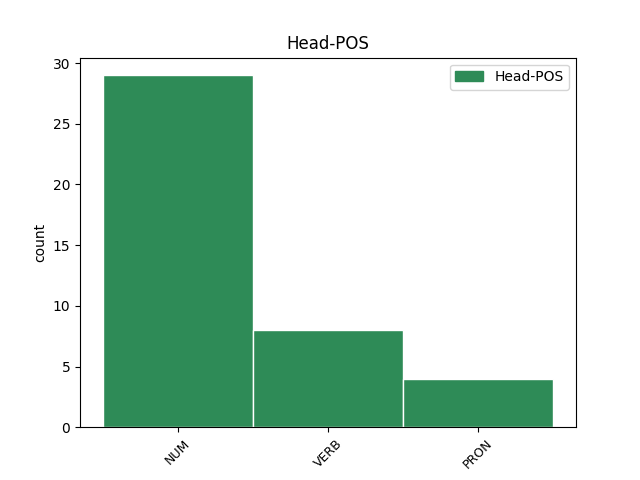
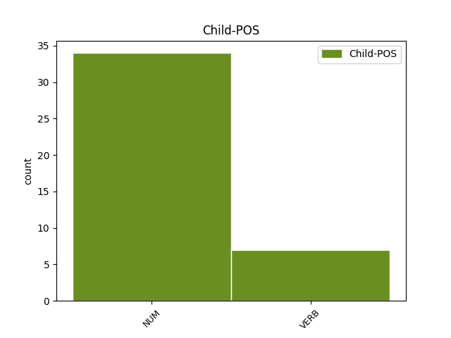

Distribution of features within this leaf



Agreement Rules sorted by frequency.
- When the dependent token is the compound(compound) of the head token, and the dependent token is NUM.
1 Tas _ _ _ _ 0 _ _ _
2 jau _ _ _ _ 0 _ _ _
3 bija _ _ _ _ 0 _ _ _
4 pirms _ _ _ _ 0 _ _ _
5 septiņiem septiņi NUM mcsmpd Case=Dat|Gender=Masc|Number=Plur|NumType=Card 0 _ _ _
6 astoņiem astoņi NUM mcsmpd Case=Dat|Gender=Masc|Number=Plur|NumType=Card 5 compound _ LvtbNodeId=a-s78-p12s5w6
7 gadiem _ _ _ _ 0 _ _ _
8 , _ _ _ _ 0 _ _ _
9 kad _ _ _ _ 0 _ _ _
10 aizņemties _ _ _ _ 0 _ _ _
11 bija _ _ _ _ 0 _ _ _
12 tikpat _ _ _ _ 0 _ _ _
13 viegli _ _ _ _ 0 _ _ _
14 . _ _ _ _ 0 _ _ _
1 Artēmijs _ _ _ _ 0 _ _ _
2 gājis iet VERB vmnpdmsnasnpn Aspect=Perf|Case=Nom|Definite=Ind|Degree=Pos|Gender=Masc|Number=Sing|Polarity=Pos|Tense=Past|VerbForm=Part|Voice=Act 23 comp:obj _ LvtbNodeId=a-p5319-p5s3w2
3 pa _ _ _ _ 0 _ _ _
4 priekšu _ _ _ _ 0 _ _ _
5 , _ _ _ _ 0 _ _ _
6 bet _ _ _ _ 0 _ _ _
7 meitene _ _ _ _ 0 _ _ _
8 gaidīja _ _ _ _ 0 _ _ _
9 , _ _ _ _ 0 _ _ _
10 kamēr _ _ _ _ 0 _ _ _
11 viņš _ _ _ _ 0 _ _ _
12 būs _ _ _ _ 0 _ _ _
13 nozudis _ _ _ _ 0 _ _ _
14 aiz _ _ _ _ 0 _ _ _
15 viesnīcas _ _ _ _ 0 _ _ _
16 durvīm _ _ _ _ 0 _ _ _
17 , _ _ _ _ 0 _ _ _
18 lai _ _ _ _ 0 _ _ _
19 pati _ _ _ _ 0 _ _ _
20 dotos _ _ _ _ 0 _ _ _
21 iekšā _ _ _ _ 0 _ _ _
22 , _ _ _ _ 0 _ _ _
23 novērojuši novērot VERB vmnpdmpnasnpn Aspect=Perf|Case=Nom|Definite=Ind|Degree=Pos|Gender=Masc|Number=Plur|Polarity=Pos|Tense=Past|VerbForm=Part|Voice=Act 0 _ _ _
24 acīgie _ _ _ _ 0 _ _ _
25 krievu _ _ _ _ 0 _ _ _
26 žurnālisti _ _ _ _ 0 _ _ _
27 . _ _ _ _ 0 _ _ _
Disagree Examples:
1 Un _ _ _ _ 0 _ _ _
2 tikai _ _ _ _ 0 _ _ _
3 , _ _ _ _ 0 _ _ _
4 kad _ _ _ _ 0 _ _ _
5 uzausa _ _ _ _ 0 _ _ _
6 rīts _ _ _ _ 0 _ _ _
7 un _ _ _ _ 0 _ _ _
8 viņi _ _ _ _ 0 _ _ _
9 saredzēja _ _ _ _ 0 _ _ _
10 viens viens NUM mcsmsn Case=Nom|Gender=Masc|Number=Sing|NumType=Card 11 compound _ LvtbNodeId=a-d135-p233s1w10
11 otru otrs NUM mcsmsa Case=Acc|Gender=Masc|Number=Sing|NumType=Card 0 _ _ _
12 , _ _ _ _ 0 _ _ _
13 abi _ _ _ _ 0 _ _ _
14 palaida _ _ _ _ 0 _ _ _
15 vaļā _ _ _ _ 0 _ _ _
16 rokas _ _ _ _ 0 _ _ _
17 , _ _ _ _ 0 _ _ _
18 lai _ _ _ _ 0 _ _ _
19 saklātu _ _ _ _ 0 _ _ _
20 katrs _ _ _ _ 0 _ _ _
21 savu _ _ _ _ 0 _ _ _
22 guļvietu _ _ _ _ 0 _ _ _
23 . _ _ _ _ 0 _ _ _
1 Tā _ _ _ _ 0 _ _ _
2 nu _ _ _ _ 0 _ _ _
3 mēs _ _ _ _ 0 _ _ _
4 ar _ _ _ _ 0 _ _ _
5 Doru _ _ _ _ 0 _ _ _
6 , _ _ _ _ 0 _ _ _
7 viena _ _ _ _ 0 _ _ _
8 otru otrs NUM mcsmsa Case=Acc|Gender=Masc|Number=Sing|NumType=Card 9 comp:obj _ LvtbNodeId=a-d136-p231s1w8
9 pavadīdamas pavadīt VERB vmnpdfpnapn0n Aspect=Imp|Case=Nom|Definite=Ind|Gender=Fem|Number=Plur|Polarity=Pos|Tense=Pres|VerbForm=Part|Voice=Act 0 _ _ _
10 , _ _ _ _ 0 _ _ _
11 izgājām _ _ _ _ 0 _ _ _
12 šīs _ _ _ _ 0 _ _ _
13 dienas _ _ _ _ 0 _ _ _
14 finiša _ _ _ _ 0 _ _ _
15 taisnē _ _ _ _ 0 _ _ _
16 un _ _ _ _ 0 _ _ _
17 devāmies _ _ _ _ 0 _ _ _
18 uz _ _ _ _ 0 _ _ _
19 autobusu _ _ _ _ 0 _ _ _
20 pieturu _ _ _ _ 0 _ _ _
21 . _ _ _ _ 0 _ _ _
1 Brīdi _ _ _ _ 0 _ _ _
2 abi _ _ _ _ 0 _ _ _
3 lūkojas _ _ _ _ 0 _ _ _
4 viens viens NUM mcsmsn Case=Nom|Gender=Masc|Number=Sing|NumType=Card 5 compound _ LvtbNodeId=a-d137-p1158s5w4
5 otrā otrs NUM mcsmsl Case=Loc|Gender=Masc|Number=Sing|NumType=Card 0 _ _ _
6 . _ _ _ _ 0 _ _ _
1 Mani _ _ _ _ 0 _ _ _
2 atturēja _ _ _ _ 0 _ _ _
3 vienīgi _ _ _ _ 0 _ _ _
4 fakts _ _ _ _ 0 _ _ _
5 , _ _ _ _ 0 _ _ _
6 ka _ _ _ _ 0 _ _ _
7 pats _ _ _ _ 0 _ _ _
8 Merilins _ _ _ _ 0 _ _ _
9 Mensons _ _ _ _ 0 _ _ _
10 vēl _ _ _ _ 0 _ _ _
11 joprojām _ _ _ _ 0 _ _ _
12 dzīvo _ _ _ _ 0 _ _ _
13 , _ _ _ _ 0 _ _ _
14 cepuri _ _ _ _ 0 _ _ _
15 kuldams _ _ _ _ 0 _ _ _
16 , _ _ _ _ 0 _ _ _
17 un _ _ _ _ 0 _ _ _
18 i _ _ _ _ 0 _ _ _
19 nedomā _ _ _ _ 0 _ _ _
20 par _ _ _ _ 0 _ _ _
21 to tas PRON pd3msan Case=Acc|Gender=Masc|Number=Sing|Person=3|PronType=Dem 0 _ _ _
22 , _ _ _ _ 0 _ _ _
23 cik _ _ _ _ 0 _ _ _
24 mana _ _ _ _ 0 _ _ _
25 gadagājuma _ _ _ _ 0 _ _ _
26 cilvēku _ _ _ _ 0 _ _ _
27 ( _ _ _ _ 0 _ _ _
28 būdami _ _ _ _ 0 _ _ _
29 jauni _ _ _ _ 0 _ _ _
30 vai _ _ _ _ 0 _ _ _
31 veci _ _ _ _ 0 _ _ _
32 ) _ _ _ _ 0 _ _ _
33 viņa _ _ _ _ 0 _ _ _
34 dēļ _ _ _ _ 0 _ _ _
35 izdarījuši izdarīt VERB vmnpdmpnasnpn Aspect=Perf|Case=Nom|Definite=Ind|Degree=Pos|Gender=Masc|Number=Plur|Polarity=Pos|Tense=Past|VerbForm=Part|Voice=Act 21 comp:obj _ LvtbNodeId=a-d27-p23s3w35
36 pašnāvību _ _ _ _ 0 _ _ _
37 , _ _ _ _ 0 _ _ _
38 nē _ _ _ _ 0 _ _ _
39 , _ _ _ _ 0 _ _ _
40 kur _ _ _ _ 0 _ _ _
41 nu _ _ _ _ 0 _ _ _
42 , _ _ _ _ 0 _ _ _
43 Merilinam _ _ _ _ 0 _ _ _
44 Mensonam _ _ _ _ 0 _ _ _
45 ir _ _ _ _ 0 _ _ _
46 jau _ _ _ _ 0 _ _ _
47 kāds _ _ _ _ 0 _ _ _
48 piektais _ _ _ _ 0 _ _ _
49 ķermenis _ _ _ _ 0 _ _ _
50 , _ _ _ _ 0 _ _ _
51 bail _ _ _ _ 0 _ _ _
52 pat _ _ _ _ 0 _ _ _
53 skatīties _ _ _ _ 0 _ _ _
54 , _ _ _ _ 0 _ _ _
55 kas _ _ _ _ 0 _ _ _
56 ar _ _ _ _ 0 _ _ _
57 to _ _ _ _ 0 _ _ _
58 ir _ _ _ _ 0 _ _ _
59 noticis _ _ _ _ 0 _ _ _
60 pēc _ _ _ _ 0 _ _ _
61 vairākām _ _ _ _ 0 _ _ _
62 " _ _ _ _ 0 _ _ _
63 kosmētiskajām _ _ _ _ 0 _ _ _
64 " _ _ _ _ 0 _ _ _
65 operācijām _ _ _ _ 0 _ _ _
66 ( _ _ _ _ 0 _ _ _
67 ko _ _ _ _ 0 _ _ _
68 es _ _ _ _ 0 _ _ _
69 gan _ _ _ _ 0 _ _ _
70 sauktu _ _ _ _ 0 _ _ _
71 par _ _ _ _ 0 _ _ _
72 kapitālajiem _ _ _ _ 0 _ _ _
73 remontiem _ _ _ _ 0 _ _ _
74 ) _ _ _ _ 0 _ _ _
75 . _ _ _ _ 0 _ _ _
1 Viens viens NUM mcsmsn Case=Nom|Gender=Masc|Number=Sing|NumType=Card 2 compound _ LvtbNodeId=a-d28-p201s1w1
2 otru otrs NUM mcsmsa Case=Acc|Gender=Masc|Number=Sing|NumType=Card 0 _ _ _
3 neuzrunāja _ _ _ _ 0 _ _ _
4 arī _ _ _ _ 0 _ _ _
5 Helēna _ _ _ _ 0 _ _ _
6 un _ _ _ _ 0 _ _ _
7 Todhauzens _ _ _ _ 0 _ _ _
8 , _ _ _ _ 0 _ _ _
9 kuri _ _ _ _ 0 _ _ _
10 kājām _ _ _ _ 0 _ _ _
11 sekoja _ _ _ _ 0 _ _ _
12 lēnīgajiem _ _ _ _ 0 _ _ _
13 braucējiem _ _ _ _ 0 _ _ _
14 . _ _ _ _ 0 _ _ _